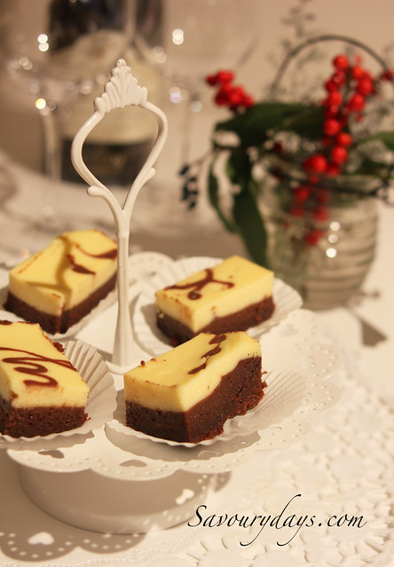

How to make creamcheese brownies?

Descriptions
Creamcheese brownies is such a delicious treat for yourself and everyone around you. And making it is not hard at all in comparison to other savoury desserts, with only about 20 minutes of preparation and one hour of baking it in the oven. So why don't you give it a try and see for yourself how easy it is to start making home-made cakes?
Ingredients
- For the creamcheese:
- 350g cream cheese (soften at room temperature)
- 100g whipping cream (35-40% fat)
- 70 - 75g sugar (depending on your taste)
- 2 eggs (60g/ with shell) (room temperature)
- 5ml vanilla
- For the brownies:
- 180g unsalted butter
- 175g chocolate (55 - 60% cocoa)
- 30g whipping cream (35-40% fat)
- 7g cocoa powder
- 170g sugar
- 3 eggs (60g/with shell) (room temperature)
- 80g pastry flour or all-purpose flour
- 7ml vanilla
Steps
- Preheat oven to 155 degrees Celsius (2 fire). Prepare a 20 x 20 cm square mold. If using a removable base, spread a thin layer of butter and then cover with a thin layer of flour on the sides and bottom of the mold to prevent sticking. If using a flat-bottomed mold, line the inside of the mold with parchment paper so that the edge of the paper is slightly pressed against the wall of the mold, so that after the cake is cooked, you can hold the paper and lift it up easily.
- Prepare the creamcheese:
- Put cream cheese in a bowl, beat until cream cheese is smooth. Add whipping cream, mix well to combine the two ingredients (I beat with a hand-held whisk, you can beat with a mixer at the lowest speed, but should not be beaten for too long, to avoid separating the cream).
- Add eggs, sugar, vanilla, use a whisk to beat, until the ingredients are just blended, then stop. Set aside.
- Prepare the brownies:
- Put butter (cut into small pieces), chocolate (crushed or thinly grated), whipping cream into a bowl. Boil a pot of water, place the bowl on top of the pot - note: the bottom of the bowl does not touch the water, the heat from the boiling water will help the chocolate and butter melt. Stir to combine ingredients.
- Sift cocoa powder into a bowl, mix well.
- Sift the sugar into the bowl, add vanilla, mix well.
- Add eggs one at a time, beat and blend after each addition.
- Sift flour into bowl. Mix. The mixture will become smooth and quite thick.
- Pour the dough into the paper-lined pan, using a spatula or a knife to flatten the dough. Leave about 2-3 tablespoons to put in the piping bag to "draw" the flower pattern on the cake.
- Gently pour the cream cheese over the brownie in the mold. Lightly pat the mold to spread the dough evenly.
- Use the left aside brownie to "draw" the flower pattern on the surface of the cream cheese. To create a spider web pattern, you start from the center of the cake, draw a continuous circle from the inside to the outside. Then use a toothpick to pull from the center to the outside, clean the tip of the toothpick, and pull the second line from the outside to the center. Repeat until the circle is over. We will have a "spider web" as shown in the image. Or you can write letters, draw pictures…. as you like.
- Bake the cake at 150 - 155 degrees C for about 50 - 60 minutes.
- Baking time and temperature are subject to change. With this brownie cheesecake, do not bake at too high a temperature, the surface will be easily cracked, the cake will dry out quickly while the inside of the cake is still wet (because it is not cooked enough time). Especially with small ovens (40L or less) or the upper fire is higher than the lower one, care should be taken to avoid the temperature being too high or the cake too close to the upper fire. My oven is a 52L type, I bake it in the lowest slot, at a temperature of 155 degrees Celsius for about 60 minutes.
- The cake is best cooked when the cream cheese layer is still slightly fluttering and when you try to insert a toothpick in the center of the cake, when you pull it out, you can see that there are a few crumbs sticking to the stick. Note that with Cheese cake Brownie, the cake can be moist and wet but not allowed to dry.
- Allow to cool, then place the cake (and mold) in the refrigerator for about 60 minutes to allow the brownie and cream cheese to set. Take the cake out of the mold. Use a sharp knife, dip it in hot water, and pat dry to cut the cake. Should prepare a damp cloth or tissue to wipe the knife after 1 or 2 cuts, the cake will not be smudged.
- Store the cake in the refrigerator or in a cool place (cover/wrap tightly). Use for 2-3 days.
- Finished product requirements:
Note: If the cream cheese is not smooth, and the cream is clumpy, it is maybe because the cream cheese is not completely cold. However, this does not greatly affect the quality of the cake.
Note: If the chocolate has more than 60% cocoa, the sugar should be increased a bit and if the mixture is too thick, you can add a little whipping cream. If the chocolate has less than 50% cocoa content, a few grams of cocoa powder can be added.

Note:
Brownie part is soft and moist, has no powdery taste, does not get tangled, does not cause choking sensation when eaten, even when refrigerated, it does not harden, has a chocolate aroma, and is moderately sweet. Cheese cake is soft, moist, flexible, not too liquid or too dry, has a mild sour taste of cream cheese, is fragrant and sweet.
